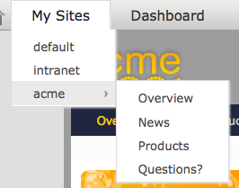

Portal Advanced Features
Sites, Layouts, Navigation, Portlets
Sites
- You can manage several sites in eXo
- By default, there 3 example sites “acme”, “intranet”, “default”
- Each site consists of a navigation nodes (=menu entries), pages and a common site layout
- The site acme has the navigation entries “Overview”, “News”, “Products”, “Questions”

Portal Advanced Features
Sites, Layouts, Navigation, Portlets